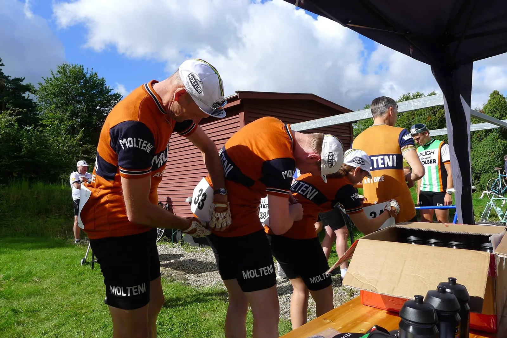

Optakt: Grand Prix Vejle Ådal

Squadra Molteni sender på lørdag et frygtindgydende hold til det jyske vintagecykelløb Grand Prix Vejle Ådal, der efter et års pause, er genopstået.
Squadra Molteni har samlet et stærkt hold til Grand Prix Vejle Ådal bestående af Niels Bjørnsteen, Peter Meinert, Grane Maaløe, Finn Birk, Christian Vaaben og Max Nielsen.
Det er et toptrimmet og frygtindgydende 6-mandshold bestående af grusspecialister, som vi sender afsted til Grand Prix Vejle Ådal, fortæller Kaptajn Bjørnsteen.
Grand Prix Vejle Ådal køres på en 60 km rute med lange gruspavéer – i alt godt 15 km.
Meget kan ske på den krævende og kuperede rute. Specielt på de mange lange gruspavéer. Så vi lagt taktikken ud fra forskellige strategiske scenarier, fortæller Capitan de Route Peter Meinert.
Grand Prix Vejle Ådal har været kørt 2 gange tidligere. I 2014 og 2015. Jack Petersen (Squadra Italia) vandt i 2014 og i 2015 vandt Yeh’ns Dichie (Team Christiania).
Der er mange stærke ryttere på startlisten i år. Der er virkelig lagt op til en god fight – og Squadra Molteni vil selvfølgelig gøre sit til, at podiet bliver så orange som muligt, siger Niels Bjørnsteen
Grand Prix Vejle Ådal har start og mål ved Bindeballe Købmandsgård, Bindeballevej 100. Starten går kl. 11.00
